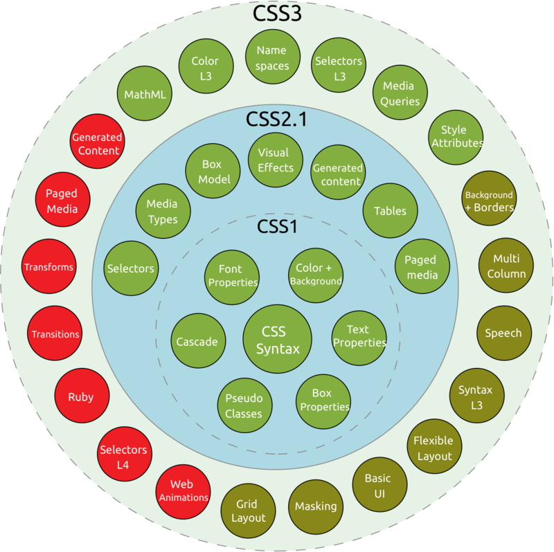

Cascading Style Sheets (CSS) is a style sheet language used for describing the presentation of a document written inmarkup language like HTML.[1] CSS is a cornerstone technology of the World Wide Web, alongside HTML and JavaScript CSS is designed to enable the separation of presentation and content, including layout, colors, and fonts.[3] This separation can improve content accessibility, provide more flexibility and control in the specification of presentation characteristics, enable multiple web pages to share formatting by specifying the relevant CSS in a separate .css file, and reduce complexity and repetition in the structural content.
However, even when later 'version 5' web browsers began to offer a fairly full implementation of CSS, they were still incorrect in certain areas and were fraught with inconsistencies, bugs and other quirks. Microsoft Internet Explorer 5.x for Windows, as opposed to the very different IE for Macintosh, had a flawed implementation of the 'CSS box model', as compared with the CSS standards. Such inconsistencies and variation in feature support made it difficult for designers to achieve a consistent appearance across browsers and platforms without the use of workarounds termed CSS hacks and filters. The IE/Windows box model bugs were so serious that, when Internet Explorer 6 was released, Microsoft introduced a backwards-compatible mode of CSS interpretation ('quirks mode') alongside an alternative, corrected 'standards mode'. Other non-Microsoft browsers also provided such 'mode'-switch behavior capability. It therefore became necessary for authors of HTML files to ensure they contained special distinctive 'standards-compliant CSS intended' marker to show that the authors intended CSS to be interpreted correctly, in compliance with standards, as opposed to being intended for the now long-obsolete IE5/Windows browser. Without this marker, web browsers that have the 'quirks mode'-switching capability will size objects in web pages as IE5/Windows would rather than following CSS standards.[citation needed] Problems with patchy adoption of CSS, along with errata in the original specification, led the W3C to revise the CSS 2 standard into CSS 2.1, which moved nearer to a working snapshot of current CSS support in HTML browsers. Some CSS 2 properties that no browser successfully implemented were dropped, and in a few cases, defined behaviors were changed to bring the standard into line with the predominant existing implementations. CSS 2.1 became a Candidate Recommendation on February 25, 2004, but CSS 2.1 was pulled back to Working Draft status on June 13, 2005,[34] and only returned to Candidate Recommendation status on July 19, 2007.[35] In addition to these problems, the .css extension was used by a software product used to convert PowerPoint files into Compact Slide Show files,[36] so some web servers served all .css[37] as MIME type application/x-pointplus[38] rather than text/css.
CSS was first proposed by Håkon Wium Lie on October 10, 1994.[21] At the time, Lie was working with Tim Berners-Lee at CERN.[22] Several other style sheet languages for the web were proposed around the same time, and discussions on public mailing lists and inside World Wide Web Consortium resulted in the first W3C CSS Recommendation (CSS1)[23] being released in 1996. In particular, a proposal by Bert Bos was influential; he became co-author of CSS1, and is regarded as co-creator of CSS.[24] Style sheets have existed in one form or another since the beginnings of Standard Generalized Markup Language (SGML) in the 1980s, and CSS was developed to provide style sheets for the web.[25] One requirement for a web style sheet language was for style sheets to come from different sources on the web. Therefore, existing style sheet languages like DSSSL and FOSI were not suitable. CSS, on the other hand, let a document's style be influenced by multiple style sheets by way of "cascading" styles.[25] As HTML grew, it came to encompass a wider variety of stylistic capabilities to meet the demands of web developers. This evolution gave the designer more control over site appearance, at the cost of more complex HTML. Variations in web browser implementations, such as ViolaWWW and WorldWideWeb,[26] made consistent site appearance difficult, and users had less control over how web content was displayed. The browser/editor developed by Tim Berners-Lee had style sheets that were hard-coded into the program. The style sheets could therefore not be linked to documents on the web.[27] Robert Cailliau, also of CERN, wanted to separate the structure from the presentation so that different style sheets could describe different presentation for printing, screen-based presentations, and editors.[26]
A declaration block consists of a list of declarations in braces. Each declaration itself consists of a property, a colon (:), and a value. If there are multiple declarations in a block, a semi-colon (;) must be inserted to separate each declaration.[9] Properties are specified in the CSS standard. Each property has a set of possible values. Some properties can affect any type of element, and others apply only to particular groups of elements.[10] Values may be keywords, such as "center" or "inherit", or numerical values, such as 200px (200 pixels), 50vw (50 percent of the viewport width) or 80% (80 percent of the parent element's width). Color values can be specified with keywords (e.g. "red"), hexadecimal values (e.g. #FF0000, also abbreviated as #F00), RGB values on a 0 to 255 scale (e.g. rgb(255, 0, 0)), RGBA values that specify both color and alpha transparency (e.g. rgba(255, 0, 0, 0.8)), or HSL or HSLA values (e.g. hsl(000, 100%, 50%), hsla(000, 100%, 50%, 80%)).[11]
Non-zero numeric values representing linear measures must include a length unit, which is either an alphabetic code or abbreviation, as in 200px or 50vw; or a percentage sign, as in 80%. Some units – cm (centimetre); in (inch); mm (millimetre); pc (pica); and pt (point) – are absolute, which means that the rendered dimension does not depend upon the structure of the page; others – em (em); ex (ex) and px (pixel) – are relative, which means that factors such as the font size of a parent element can affect the rendered measurement. These eight units were a feature of CSS 1[12] and retained in all subsequent revisions. The proposed CSS Values and Units Module Level 3 will, if adopted as a W3C Recommendation, provide seven further length units: ch; Q; rem; vh; vmax; vmin; and vw.[13]
Before CSS, nearly all presentational attributes of HTML documents were contained within the HTML markup. All font colors, background styles, element alignments, borders and sizes had to be explicitly described, often repeatedly, within the HTML. CSS lets authors move much of that information to another file, the style sheet, resulting in considerably simpler HTML. For example, headings (h1 elements), sub-headings (h2), sub-sub-headings (h3), etc., are defined structurally using HTML. In print and on the screen, choice of font, size, color and emphasis for these elements is presentational. Before CSS, document authors who wanted to assign such typographic characteristics to, say, all h2 headings had to repeat HTML presentational markup for each occurrence of that heading type. This made documents more complex, larger, and more error-prone and difficult to maintain. CSS allows the separation of presentation from structure. CSS can define color, font, text alignment, size, borders, spacing, layout and many other typographic characteristics, and can do so independently for on-screen and printed views. CSS also defines non-visual styles, such as reading speed and emphasis for aural text readers. The W3C has now deprecated the use of all presentational HTML markup.[14]